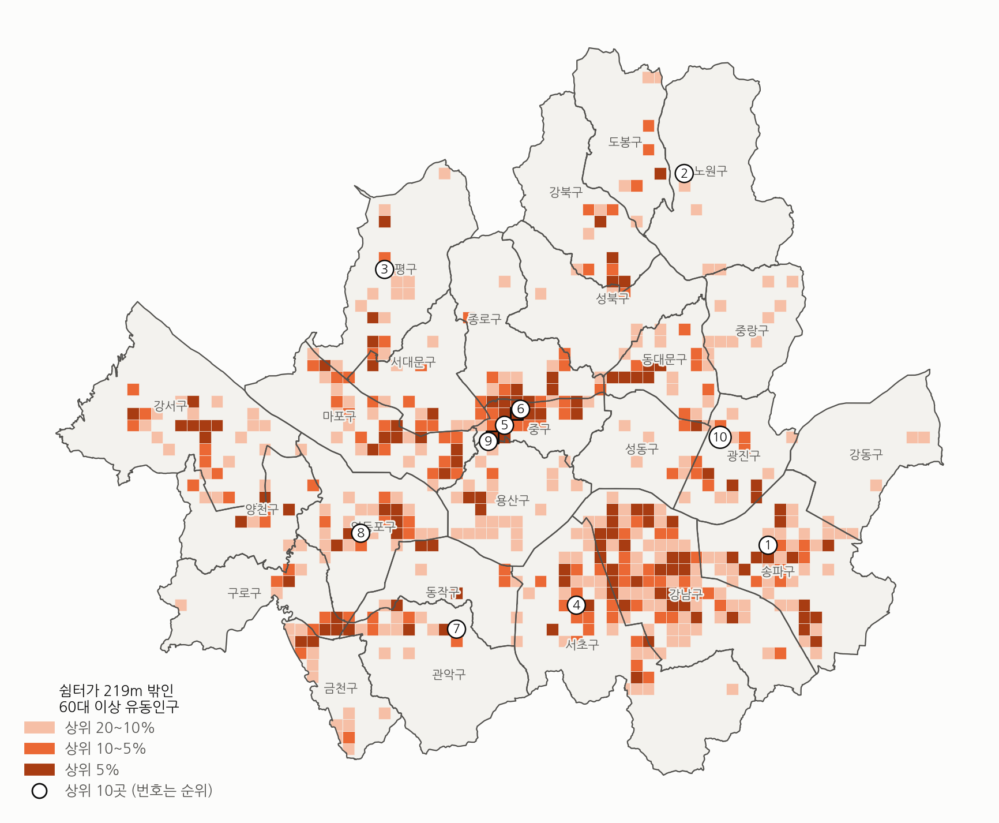

4-2. 거주인구와 유동인구 기준 사각지대
거주인구 기준

강남구 커버율 39.5%, 서울 전체 82.4%.
유동인구 기준

강남구 커버율 42.4%, 서울 전체 68.5%.
커버율 하위 3개 구
거주강남구, 서초구, 마포구
유동강남구, 마포구, 중구
두 기준 모두 강남구가 가장 낮다.
쉼터까지 직선거리 219m 기준 / 주황색이 진할수록 쉼터 219m 밖 고령 인구가 많은 구획
16
6-1. 신규 쉼터 15곳일 때 세 모형의 선정 위치
조건기존 쉼터 96곳 유지, 후보 148곳 중 15곳 추가, 보행거리 219m 기존 배치커버율 22.8% · 평균 보행거리 407m · 최저 동 커버율 4.0%
p-median

커버율29.3%+6.5%p
평균 보행거리342m−65m
최저 동 커버율7.7%
MCLP

커버율30.3%+7.5%p
평균 보행거리357m−50m
최저 동 커버율5.8%
형평성 MCLP

커버율28.8%+6.0%p
평균 보행거리362m−45m
최저 동 커버율14.7%
주황 숫자는 지표별 가장 좋은 값 / 최저 동 커버율은 비율 지표다. 최종 지표(동별 커버 인원의 최솟값)로 교체 예정
19